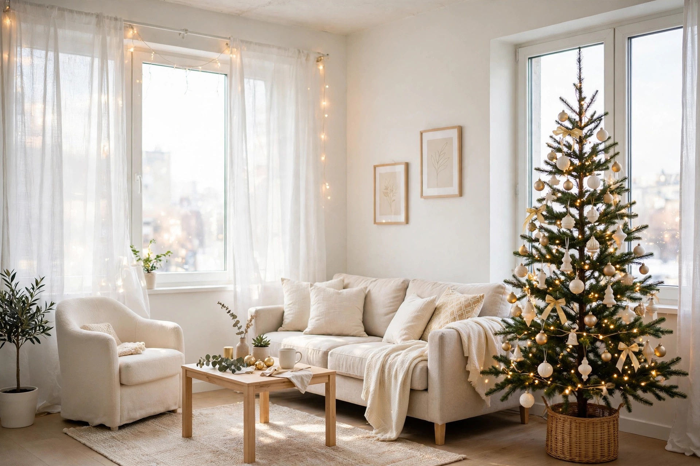

Christmas Decor
Bright Christmas Decor — 12 Ideas That Light Up a Small Room
Intro
Bright Christmas decor is Christmas that glows. It is white and gold instead of dark green and red, fairy lights in every corner, mirrors that bounce the light, and pale colours that make a small room feel bigger, not smaller. In a small flat with one window and short winter days, bright decor is not just a style — it is the difference between a flat that feels dark in December and one that feels warm.
This guide has 12 bright Christmas ideas for small rooms. Each idea lists what it costs. Most of them are about light — adding it, reflecting it, or letting it in. Start with the lights, add the mirrors, and keep the colours pale.

1. Fairy lights in every corner, not just the tree — $10–$18
One string of fairy lights on the tree is not enough in a dark flat. Put a string on the tree, one along the window frame, one on the mantel and one on the bookshelf — four strings, all warm white, all on timers. Four strings of battery lights cost about $15. The flat glows from every corner instead of one, and the light feels even, not patchy. Battery lights with timers are worth it: they switch on at dusk and off at midnight without you touching them.
2. A white and gold colour scheme — $10–$20
White and gold is the brightest Christmas palette. White baubles, gold ribbon, gold candle holders and a white tree skirt make the room reflect light instead of absorbing it. A pack of white baubles costs about $8 and a roll of gold ribbon about $5. The palette suits a small flat because pale colours make the walls look further away. Keep one green garland for contrast — a single touch of green stops the white and gold from feeling cold.
3. Mirrors opposite the tree to double the lights — $0–$15
A mirror opposite the Christmas tree doubles the lights. The fairy lights reflect in the glass, and the tree appears twice — once real, once reflected. If you already own a mirror, move it opposite the tree for December; it costs nothing. If you need one, a simple mirror about 50 cm across costs about $15. The mirror also makes the room look bigger, which is the oldest small-flat trick there is, and at Christmas it works twice as hard.
4. A white tree instead of a green one — $25–$40
A white artificial tree is the boldest bright-decor choice, and it suits a small flat better than a green one. White branches reflect the fairy lights, so the tree glows even in daylight, and white baubles disappear into it while coloured ones pop. A slim white tree about 150 cm tall costs about $35. It is a statement — the whole room is built around it — so keep the rest of the decor simple: gold ribbon, white lights, and nothing else on the tree except a few bright baubles.
5. Gold candle holders in a row — $8–$15
Gold reflects light better than any other colour. A row of gold candle holders — three or four, in different heights — along the mantel or the windowsill catches the fairy lights and throws warm gold spots around the room. A set of gold holders costs about $12. Use battery candles inside them for safety. The gold works in daylight too: even without the candles lit, the holders catch the window light and shine.
6. Sheer curtains to let the daylight in — $10–$18
Heavy curtains block the little daylight a small flat gets in December. Swap them for sheer white curtains for the month — they let the light in, soften the window and still give privacy. A pair of sheer curtains costs about $15. They also make the fairy lights on the window frame glow through the fabric in the evening, which looks like the window itself is lit. Put the heavy curtains back in January.
7. A light-coloured tree skirt that reflects the floor — $8–$15
A dark tree skirt absorbs light; a pale one reflects it. Choose a white, cream or pale gold tree skirt, and the floor around the tree looks brighter. A pale tree skirt costs about $12. It also makes the presents underneath it stand out — bright wrapping paper pops against a pale skirt, and dark paper disappears against a dark one. The skirt is the cheapest way to brighten the bottom half of the room.
8. Glass and crystal ornaments that catch the light — $8–$15
Glass ornaments — clear baubles, crystal drops, icicles — catch the fairy lights and throw tiny rainbows around the room. A pack of clear glass baubles costs about $10. Hang them on the outer branches of the tree, where the light hits them, not buried inside. They are fragile, so keep them high on the tree and away from cats and small children. One pack is enough; too many glass ornaments look like a chandelier.
9. A bright window display with white stars — $3–$8
The window is the brightest spot in the flat, so decorate it in white. Hang white paper stars, white snowflakes and a string of warm fairy lights in the window, and the daylight shines through them all day. A pack of white paper stars costs about $5. From outside, the window glows white and gold; from inside, the stars catch the light and throw soft shadows on the wall. White on a window looks clean and bright, never cluttered.
10. A pale throw and white cushions on the sofa — $12–$20
Swap the dark winter throw for a pale one — cream, white or pale gold — and the sofa stops absorbing light. A pale throw costs about $12 and two white cushion covers about $5 each. The pale textiles reflect the fairy lights across the room, and the sofa looks fresh instead of heavy. They are also practical: a pale throw shows the Christmas crumbs, which means it gets washed, which means it stays fresh all month.
11. LED candles in the windows — $10–$18
A row of LED candles in the windows — one per window, or three in a row on the largest sill — is the brightest decoration a small flat can have. From outside, the windows glow warm; from inside, the candles light the room without a single wire. A set of three LED window candles costs about $15. Put them on timers so they switch on at dusk. They are the decoration that makes the flat look welcoming from the street, and they cost less than one string of outdoor lights.
12. Keep the room tidy so the light can move — $0
The brightest decoration costs nothing: a tidy room. Clutter blocks light — a pile of coats by the door, a stack of boxes in the corner, a crowded shelf. Clear one surface a day through December, and the fairy lights will reach further. A tidy small room reflects light from every wall; a cluttered one swallows it. This is the least glamorous idea in the guide and the one that makes the biggest difference to how bright the flat feels.
Conclusion
Bright Christmas decor is about light: fairy lights in every corner, white and gold instead of dark colours, mirrors that double the glow, and pale textiles that reflect it. In a small room with short winter days, brightness is not a luxury — it is what makes December feel like a celebration instead of a dark month. Start with the lights, add one mirror, and let the room glow.
Budget recap
- Fairy lights, four strings: ~$15 - White baubles + gold ribbon: ~$13 - Gold candle holders: ~$12
Total for bright Christmas decor: ~$30–$45 — start with the lights, then the mirror.
Pinterest pin titles
- Bright Christmas Decor — 12 Ideas That Light Up a Small Room
- 12 Bright Christmas Ideas for Dark Small Rooms
- Light Up Your Flat: 12 Bright Christmas Decor Ideas